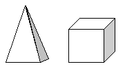
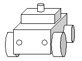

N64 displays 3D images as textured polygons. The actual 3D image is an aggregate of polygons provided with geometric conversion information at each vertex and placed in the virtual view space.
Each 3D image is classified as either a 3D object or a 3D model depending on the number of the vertices and how the object is used.
A 3D object is a single closed object that treats and displays all vertex information as such. Here is an example of a 3D object:

A 3D model is a combination of several separate 3D objects. Each of the 3D objects is a part of the 3D model. For example, when you draw a car, you create the body and each of the wheels as separate parts (3D objects). Then you combine the parts to create the car (3D model) as shown in this illustration:


The procedure is best illustrated with a sample program (3d.c). You can find the files that make up this 3D sample in the following directory on the same CD that holds this manual:
\N64Manuals\pc\allman\samples\3d\
Note that the gfx function used in this 3D sample is not part of the standard N64 library of functions; it is defined within the sample for use in this sample.
The main routine forms the executing core of the 3D image drawing sample. The process is completed in three steps that are executed over and over in a loop:
The overall steps are the same as those for the 2D process, only the code is different.
The following initial code points to the display list and sets up the loop and initial settings:
void entry(void)
{
Gfx *gp; /* points to the display list */
float r,v,s;
r=v=0.0;
s=PI2/50000.0;
while(1)
{
/* Move one unit of the camera (to set the
rotational rate of the 3D model */
v += s;
r += v;
if(ABS(v)>PI2/100.0) s=-s;
The following code snippets reserve the necessary memory area for the construction of the display list, set up the RCP executing process in the reserved area (to draw the 3D model), and provide a termination process for the display list. Each code snippet is followed by a short explanation.
/* Start to construct the display list */ gp = gfxBegin(1024);
This code checks to see if execution setup has already been completed. If not, the code reserves the GBI command area for a new construction. If setup has already been completed, this code jumps to the RCP transfer process (step 2).
/* Set the drawing mode of RSP and RDP */ gp = setup_SP_DP(gp);
This code constructs the command that sets up the RCP drawing mode (needed for 3D drawing) and stores it in the display list.
/* The projection matrix setting */ gp = gfxPerspective(gp, 30, (float)SCREEN_WD/SCREEN_HT,64, 1000, 1.0);
This code sets up the projection matrix for use by the coordinate transformation process in the display list.
/* The model view matrix setting */ gp = gfxLookAt(gp, sinf(r)*400, 220, cosf(r)*400,0,0,0,0,1,0);
This code sets up the model view matrix for use by visual effect calculations in the display list.
/* Polygon drawing */ gp = draw_polygon(gp);
This code creates a display list for polygon drawing. It calls the actual display polygon as a separately accommodated display list.
/* End construction of the display list */ gfxEnd(gp);
This code provides the display list termination process.
Caution: Watch out for an unterminated display list. If it is transferred to the RCP, it will cause the RCP to hang (stop responding). Also, be sure to put the gDPFullSync function at the end of each display list. Otherwise, the RDP end message won't ever come.
The following code transfers the display list to the RCP where the display list is interpreted and executed.
/* Transfer completed display list to RCP */ gfxFlush( );
This code transfers the completed display list to the RCP and makes the RCP execute the process based on the display list. It also provides for the use of the frame buffer that writes the created image data.
The following function uses the CPU retrace message process to ensure that the CPU and RCP processing are in sync with each other:
/* Wait for the retrace */ gfxWaitSync( ); } }
The 3d.c sample code constructs the display list by using four techniques. The following explanation describes the two main techniques (the RSP and RDP drawing modes and the RSP 3D model data (polygon) drawing process).
The following routines set up the RCP drawing mode that actually creates the commands that render the drawing reflected in the display list.
The gSP and gDP functions are included in the N64 library; for more information about them, please see the online N64 Function Reference Manual (HTML manual pages).
/* set up lighting information */
static Lights1 lightset = gdSPDefLights1(
127, 127, 127, /* ambient light color */
255, 255, 255, /* diffuse light color */
24, 70, 66); /* diffuse light position */
EXCONTPAD *pad;
static Gfx *setup_SP_DP(Gfx *gp)
{
/* Set all sorts */
/* Clear the geometry pipeline mode */
gSPClearGeometryMode(gp++,G_SHADE |
G_SHADING_SMOOTH | G_CULL_BOTH
| G_FOG | G_LIGHTING | G_TEXTURE_GEN
| G_TEXTURE_GEN_LINEAR | G_LOD );
/* Set the geometry pipeline mode */
gSPSetGeometryMode(gp++,G_SHADE | G_LIGHTING |
G_SHADING_SMOOTH
| G_ZBUFFER | G_CULL_BACK);
/* Set the number of lights used */
gSPNumLights(gp++,2);
/* Set the light structure */
gSPSetLights1(gp++,lightset);
/* Set the texturing parameter */
gSPTexture(gp++,0,0,0,0,G_OFF);
/* Set the RDP cycle type */
gDPSetCycleType(gp++,G_CYC_1CYCLE);
/* Set the color combine mode */
gDPSetCombineMode(gp++,G_CC_SHADE,G_CC_SHADE);
/* Set the rendering mode of the blender
(within the RDP) */
gDPSetRenderMode(gp++,G_RM_ZB_OPA_SURF,
G_RM_ZB_OPA_SURF2);
/* Set the compare mode of the alpha value */
gDPSetAlphaCompare(gp++,G_AC_NONE);
/* Set the dithering mode of the color data */
gDPSetColorDither(gp++,G_CD_DISABLE);
/* Set the dithering mode of the alpha value */
gDPSetAlphaDither(gp++,G_AD_NOISE);
return gp;
}
The following code calls another (second) display list to draw (output) the polygon model. The second display list provides the geometry conversion from the vertex data in that the RSP can turn it into polygon data that the RDP can recognize. The gSP functions are included in the N64 library; for more information about them, please see the online N64 Function Reference Manual (HTML manual pages).
/* Polygon drawing */
static Gfx *draw_polygon(Gfx *gp)
{
/* Call another (second) display list
for polygon drawing */
gSPDisplayList(gp++,n64_model0);
return gp;
}
Now the second display list (with the converted data) is inside the display list currently being constructed.
Nintendo® Confidential
Copyright © 1999
Nintendo of America Inc. All Rights Reserved
Nintendo and N64 are registered trademarks of Nintendo
Last Updated March, 1999